<div class="rich_media_content js_underline_content" id="js_content" style=""><section data-mpa-powered-by="yiban.io" style="font-size: 16px; visibility: visible;"><p style="font-size: 16px; white-space: normal; visibility: visible;"><strong style='outline: 0px; color: rgb(255, 0, 0); font-family: -apple-system, BlinkMacSystemFont, "Helvetica Neue", "PingFang SC", "Hiragino Sans GB", "Microsoft YaHei UI", "Microsoft YaHei", Arial, sans-serif; letter-spacing: 0.544px; text-indent: 32px; background-color: rgb(255, 255, 255); visibility: visible;'><span style="outline: 0px; font-family: 宋体; font-size: 18px; visibility: visible;">一、品牌介绍</span></strong></p><p style='font-size: 16px; white-space: normal; outline: 0px; font-family: -apple-system, BlinkMacSystemFont, "Helvetica Neue", "PingFang SC", "Hiragino Sans GB", "Microsoft YaHei UI", "Microsoft YaHei", Arial, sans-serif; letter-spacing: 0.544px; background-color: rgb(255, 255, 255); text-indent: 2em; visibility: visible;'><span style="font-family: 宋体; outline: 0px; visibility: visible;">京伦饭店品牌是首旅酒店集团旗下首旅京伦酒店管理有限公司管理运营的所谓高端酒店品牌，与建国饭店品牌同属于首旅酒店高端事业部，起源于1984年9月20日开业的北京京伦饭店。</span></p><p style='font-size: 16px; white-space: normal; outline: 0px; font-family: -apple-system, BlinkMacSystemFont, "Helvetica Neue", "PingFang SC", "Hiragino Sans GB", "Microsoft YaHei UI", "Microsoft YaHei", Arial, sans-serif; letter-spacing: 0.544px; background-color: rgb(255, 255, 255); text-indent: 2em; visibility: visible;'><span style="font-family: 宋体; outline: 0px; visibility: visible;">2011年首旅集团批准重组成立了首旅京伦酒店管理有限公司，京伦品牌成为首旅酒店旗下第二个所谓的高端酒店品牌。</span></p><p style='font-size: 16px; white-space: normal; outline: 0px; font-family: -apple-system, BlinkMacSystemFont, "Helvetica Neue", "PingFang SC", "Hiragino Sans GB", "Microsoft YaHei UI", "Microsoft YaHei", Arial, sans-serif; letter-spacing: 0.544px; background-color: rgb(255, 255, 255); text-indent: 2em; visibility: visible;'><span style="font-family: 宋体; outline: 0px; visibility: visible;"><span style="font-family: 宋体; font-size: 16px; letter-spacing: 0.544px; text-indent: 32px; background-color: rgb(255, 255, 255); visibility: visible;">首旅建国首旅京伦宣传册上对京伦饭店品牌定位是标准四星级，实际上有的京伦品牌酒店也就三星级档次。</span></span></p><p style="font-size: 16px; white-space: normal; outline: 0px; letter-spacing: 0.544px; background-color: rgb(255, 255, 255); text-indent: 2em; visibility: visible;"><span style="font-family: 宋体; visibility: visible;"><span style="color: rgb(255, 0, 0); visibility: visible;">京伦饭店品牌在北京外的知名度基本等于零</span></span><span style="font-family: 宋体; visibility: visible;">。</span></p><p style="font-size: 16px; white-space: normal; outline: 0px; letter-spacing: 0.544px; background-color: rgb(255, 255, 255); text-indent: 2em; visibility: visible;"><span style="font-family: 宋体; visibility: visible;"><span style="color: rgb(255, 0, 0); visibility: visible;">首旅京伦宣称京伦品牌有30多家酒店</span></span><span style="font-family: 宋体; visibility: visible;">。</span></p><section style="text-indent: 2em; visibility: visible;"><span style="font-family: 宋体; outline: 0px; color: rgb(255, 0, 0); visibility: visible;">在首旅如家APP上可以查询到京伦品牌10家酒店</span><span style="font-family: 宋体; outline: 0px; visibility: visible;">（另外还有1家京伦酒店在首旅如家APP上查询不到；首旅如家APP上可以查询到的京伦酒店北京7家），5家0点评，2家1点评（其中1家是我点评的），1家3点评，1家5点评，1家7点评（有1条是我点评的）</span><span style='outline: 0px; font-family: -apple-system, BlinkMacSystemFont, "Helvetica Neue", "PingFang SC", "Hiragino Sans GB", "Microsoft YaHei UI", "Microsoft YaHei", Arial, sans-serif; font-size: 16px; letter-spacing: 0.544px; text-indent: 32px; background-color: rgb(255, 255, 255); visibility: visible;'>。</span></section><section style="text-indent: 2em; font-size: 16px; visibility: visible;"><span style="font-family: 宋体; outline: 0px; visibility: visible;">在京的7家京伦品牌酒店，多家都有员工曝出的各种奇闻轶事。</span></section><p style='font-size: 16px; white-space: normal; outline: 0px; font-family: -apple-system, BlinkMacSystemFont, "Helvetica Neue", "PingFang SC", "Hiragino Sans GB", "Microsoft YaHei UI", "Microsoft YaHei", Arial, sans-serif; letter-spacing: 0.544px; background-color: rgb(255, 255, 255); text-indent: 2em; visibility: visible;'><span style="font-family: 宋体; outline: 0px; visibility: visible;">比如网上曾有宣武门商务酒店员工发帖曝光：酒店的员餐厨师长在员工厨房监控下小便，还有在员餐就餐的多名员工出现食物中毒情况发生。<span style="font-family: 宋体; font-size: 16px; letter-spacing: 0.544px; text-indent: 32px; background-color: rgb(255, 255, 255); visibility: visible;">向酒店总经理/副总/工会主席举报</span>后，调查过程中酒店办公室主任/人力资源部经理都曾派人摘除员餐实时录像硬盘，最后酒店调查结果只说是其在监控下露阴，说没有小便视频，也未对员工进行处理。</span></p><p style='font-size: 16px; white-space: normal; outline: 0px; font-family: -apple-system, BlinkMacSystemFont, "Helvetica Neue", "PingFang SC", "Hiragino Sans GB", "Microsoft YaHei UI", "Microsoft YaHei", Arial, sans-serif; letter-spacing: 0.544px; background-color: rgb(255, 255, 255); text-indent: 2em; visibility: visible;'><span style="font-family: 宋体; outline: 0px; visibility: visible;"><br style="visibility: visible;"/></span></p><p style="font-size: 16px; white-space: normal; visibility: visible;"><strong style='outline: 0px; color: rgb(255, 0, 0); font-family: -apple-system, BlinkMacSystemFont, "Helvetica Neue", "PingFang SC", "Hiragino Sans GB", "Microsoft YaHei UI", "Microsoft YaHei", Arial, sans-serif; letter-spacing: 0.544px; text-indent: 32px; background-color: rgb(255, 255, 255); visibility: visible;'><span style="outline: 0px; font-family: 宋体; font-size: 18px; visibility: visible;">二、酒店介绍</span></strong></p><p style='font-size: 16px; white-space: normal; outline: 0px; font-family: -apple-system, BlinkMacSystemFont, "Helvetica Neue", "PingFang SC", "Hiragino Sans GB", "Microsoft YaHei UI", "Microsoft YaHei", Arial, sans-serif; letter-spacing: 0.544px; background-color: rgb(255, 255, 255); visibility: visible;'>     <span style="font-family: 宋体; outline: 0px; visibility: visible;"> 1984年9月20日，北京市旅游局（首旅集团成立后，北京市旅游局所持股份转至首旅）与外方合资建设总投资3300万元的北京京伦饭店开业，由日航饭店集团管理，为国内首批涉外饭店，当初只接待外籍人士，不接待中国人，一直持续到十多年后才对国人开放。</span></p><section style='font-size: 16px; white-space: normal; outline: 0px; font-family: -apple-system, BlinkMacSystemFont, "Helvetica Neue", "PingFang SC", "Hiragino Sans GB", "Microsoft YaHei UI", "Microsoft YaHei", Arial, sans-serif; letter-spacing: 0.544px; background-color: rgb(255, 255, 255); text-indent: 2em; visibility: visible;'><span style="font-family: 宋体; outline: 0px; visibility: visible;">2004年，首旅与日航合资成立北京首旅日航国际酒店管理有限公司，酒店改由北京首旅日航国际酒店管理有限公司管理。</span></section><p style='font-size: 16px;white-space: normal;outline: 0px;font-family: -apple-system, BlinkMacSystemFont, "Helvetica Neue", "PingFang SC", "Hiragino Sans GB", "Microsoft YaHei UI", "Microsoft YaHei", Arial, sans-serif;letter-spacing: 0.544px;background-color: rgb(255, 255, 255);'><span style="font-family: 宋体;outline: 0px;">    2014年，日航管理合同到期，改由首旅旗下首旅京伦酒店管理有限公司管理。</span></p><section style='font-size: 16px;white-space: normal;outline: 0px;font-family: -apple-system, BlinkMacSystemFont, "Helvetica Neue", "PingFang SC", "Hiragino Sans GB", "Microsoft YaHei UI", "Microsoft YaHei", Arial, sans-serif;letter-spacing: 0.544px;background-color: rgb(255, 255, 255);text-indent: 2em;'><span style="font-family: 宋体;outline: 0px;">2018年，外资方北京假期有限公司（香港）退出。</span></section><section style='font-size: 16px;white-space: normal;outline: 0px;font-family: -apple-system, BlinkMacSystemFont, "Helvetica Neue", "PingFang SC", "Hiragino Sans GB", "Microsoft YaHei UI", "Microsoft YaHei", Arial, sans-serif;letter-spacing: 0.544px;background-color: rgb(255, 255, 255);text-indent: 2em;'><span style="font-family: 宋体;outline: 0px;">北京京伦饭店，有着诸多传说（都是曾经的京伦员工吐槽）。</span></section><section style='font-size: 16px;white-space: normal;outline: 0px;font-family: -apple-system, BlinkMacSystemFont, "Helvetica Neue", "PingFang SC", "Hiragino Sans GB", "Microsoft YaHei UI", "Microsoft YaHei", Arial, sans-serif;letter-spacing: 0.544px;background-color: rgb(255, 255, 255);text-indent: 2em;'><span style="font-family: 宋体;outline: 0px;">日籍员工有食堂，差别对待。</span></section><section style='font-size: 16px;white-space: normal;outline: 0px;font-family: -apple-system, BlinkMacSystemFont, "Helvetica Neue", "PingFang SC", "Hiragino Sans GB", "Microsoft YaHei UI", "Microsoft YaHei", Arial, sans-serif;letter-spacing: 0.544px;background-color: rgb(255, 255, 255);text-indent: 2em;'><span style="font-family: 宋体;outline: 0px;">被京伦酒店员工公认为最S13的酒店，对自己员工最狠的酒店。<br/></span></section><section style='font-size: 16px;white-space: normal;outline: 0px;font-family: -apple-system, BlinkMacSystemFont, "Helvetica Neue", "PingFang SC", "Hiragino Sans GB", "Microsoft YaHei UI", "Microsoft YaHei", Arial, sans-serif;letter-spacing: 0.544px;background-color: rgb(255, 255, 255);text-indent: 2em;'><span style="font-family: 宋体;outline: 0px;">年底基层员工不发钱不发物也不发购物卡，酒店管理层各种奖金还出去游山玩水。</span></section><section style='font-size: 16px;white-space: normal;outline: 0px;font-family: -apple-system, BlinkMacSystemFont, "Helvetica Neue", "PingFang SC", "Hiragino Sans GB", "Microsoft YaHei UI", "Microsoft YaHei", Arial, sans-serif;letter-spacing: 0.544px;background-color: rgb(255, 255, 255);text-indent: 2em;'><span style="font-family: 宋体;outline: 0px;">当初某pei姓总监经常在4027房间Piaochang。</span></section><p><br/></p><p style='font-size: 16px;white-space: normal;outline: 0px;font-family: -apple-system, BlinkMacSystemFont, "Helvetica Neue", "PingFang SC", "Hiragino Sans GB", "Microsoft YaHei UI", "Microsoft YaHei", Arial, sans-serif;letter-spacing: 0.544px;text-indent: 32px;background-color: rgb(255, 255, 255);'><span style="outline: 0px;color: rgb(255, 0, 0);"><strong style="outline: 0px;"><span style="outline: 0px;font-family: 宋体;font-size: 18px;">三、位置交通</span></strong></span></p><p style='font-size: 16px;white-space: normal;outline: 0px;font-family: -apple-system, BlinkMacSystemFont, "Helvetica Neue", "PingFang SC", "Hiragino Sans GB", "Microsoft YaHei UI", "Microsoft YaHei", Arial, sans-serif;letter-spacing: 0.544px;background-color: rgb(255, 255, 255);text-indent: 37px;'><span style="outline: 0px;font-family: 宋体;"><span style="outline: 0px;">酒店位于北京市朝阳区建国门外大街3号，属于北京CBD商圈的中心，临近建国门外使馆区，酒店西侧是建国饭店、秀水市场，酒店东侧是国贸中心，酒店距离永安里地铁站大约200米，距离北京火车站2.8公里，</span>距离天安门广场5公里，周边交通出行很方便。 </span><span style="font-family: 宋体;letter-spacing: 0.544px;"></span><span style="font-family: 宋体;letter-spacing: 0.544px;"></span></p><section style="display: inline-block;">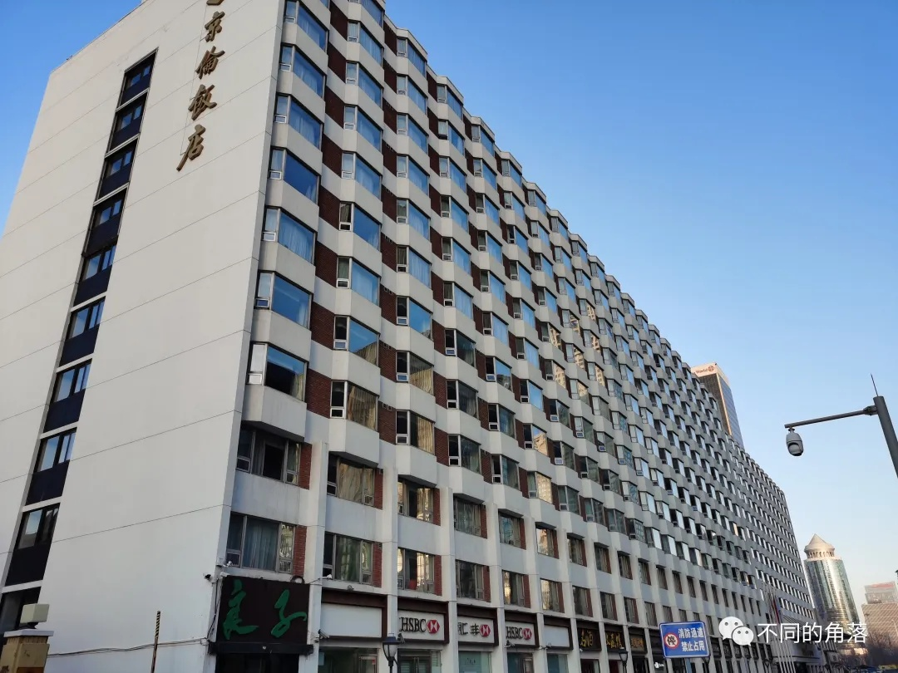</section><p style='font-size: 16px;white-space: normal;outline: 0px;font-family: -apple-system, BlinkMacSystemFont, "Helvetica Neue", "PingFang SC", "Hiragino Sans GB", "Microsoft YaHei UI", "Microsoft YaHei", Arial, sans-serif;letter-spacing: 0.544px;text-indent: 37px;background: rgb(255, 255, 255);'><span style="outline: 0px;font-family: 宋体;">京伦饭店侧面</span><br/></p><section style="display: inline-block;">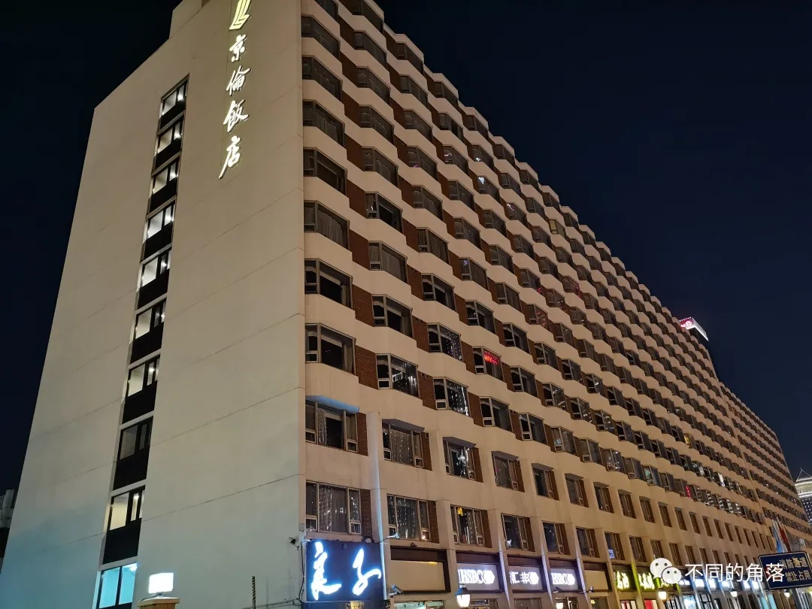</section><p style='font-size: 16px;white-space: normal;outline: 0px;font-family: -apple-system, BlinkMacSystemFont, "Helvetica Neue", "PingFang SC", "Hiragino Sans GB", "Microsoft YaHei UI", "Microsoft YaHei", Arial, sans-serif;letter-spacing: 0.544px;text-indent: 37px;background: rgb(255, 255, 255);'><span style="outline: 0px;font-family: 宋体;">京伦饭店侧面夜景</span><br/></p><section style="display: inline-block;">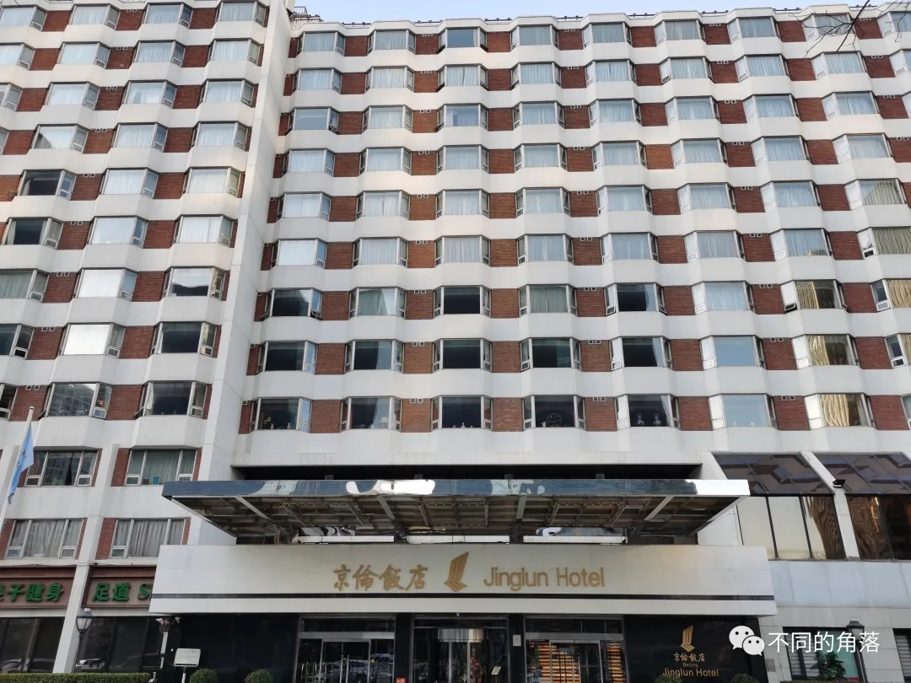</section><p style='font-size: 16px;white-space: normal;outline: 0px;font-family: -apple-system, BlinkMacSystemFont, "Helvetica Neue", "PingFang SC", "Hiragino Sans GB", "Microsoft YaHei UI", "Microsoft YaHei", Arial, sans-serif;letter-spacing: 0.544px;text-indent: 37px;background: rgb(255, 255, 255);'><span style="outline: 0px;font-family: 宋体;">京伦饭店正面</span><br/></p><p style='font-size: 16px;white-space: normal;outline: 0px;font-family: -apple-system, BlinkMacSystemFont, "Helvetica Neue", "PingFang SC", "Hiragino Sans GB", "Microsoft YaHei UI", "Microsoft YaHei", Arial, sans-serif;letter-spacing: 0.544px;background-color: rgb(255, 255, 255);text-indent: 37px;'><span style="outline: 0px;font-family: 宋体;"></span></p><p style='font-size: 16px;white-space: normal;outline: 0px;font-family: -apple-system, BlinkMacSystemFont, "Helvetica Neue", "PingFang SC", "Hiragino Sans GB", "Microsoft YaHei UI", "Microsoft YaHei", Arial, sans-serif;letter-spacing: 0.544px;text-indent: 32px;background-color: rgb(255, 255, 255);'><span style="outline: 0px;color: rgb(255, 0, 0);"><strong style="outline: 0px;"><span style="outline: 0px;font-family: 宋体;font-size: 18px;">四、酒店设施</span></strong></span></p><p style='font-size: 16px;white-space: normal;outline: 0px;font-family: -apple-system, BlinkMacSystemFont, "Helvetica Neue", "PingFang SC", "Hiragino Sans GB", "Microsoft YaHei UI", "Microsoft YaHei", Arial, sans-serif;letter-spacing: 0.544px;text-indent: 37px;background: rgb(255, 255, 255);'><span style="outline: 0px;font-family: 宋体;">酒店总共12层，除了客房</span><span style="outline: 0px;font-family: 宋体;">还有多个中餐厅、西餐厅、<span style="font-family: 宋体;font-size: 16px;letter-spacing: 0.544px;text-indent: 37px;background-color: rgb(255, 255, 255);">多功能厅、大</span><span style="font-family: 宋体;font-size: 16px;letter-spacing: 0.544px;text-indent: 37px;background-color: rgb(255, 255, 255);">堂酒吧、健身中心、商务中心、自助</span><span style="font-family: 宋体;font-size: 16px;letter-spacing: 0.544px;text-indent: 37px;background-color: rgb(255, 255, 255);">洗衣房，设施齐全。</span>泰妃苑餐厅经营东南亚风味美食；桃李中餐厅</span><span style="outline: 0px;font-family: 宋体;">经营广东潮粤海鲜菜肴；不过目前泰妃苑餐厅只提供早餐，午餐和晚餐时段只有四合轩中餐厅营业。之前日航管理的时候还有樱花屋日本餐厅和御苑铁板烧，提供正宗日本料理和日式烧烤餐厅。</span><span style="outline: 0px;font-family: 宋体;"></span></p><p style='font-size: 16px;white-space: normal;outline: 0px;font-family: -apple-system, BlinkMacSystemFont, "Helvetica Neue", "PingFang SC", "Hiragino Sans GB", "Microsoft YaHei UI", "Microsoft YaHei", Arial, sans-serif;letter-spacing: 0.544px;text-indent: 37px;background: rgb(255, 255, 255);'><span style="outline: 0px;font-family: 宋体;">之前负一层有歌厅，是北京最早的歌厅。</span></p><section style="display: inline-block;">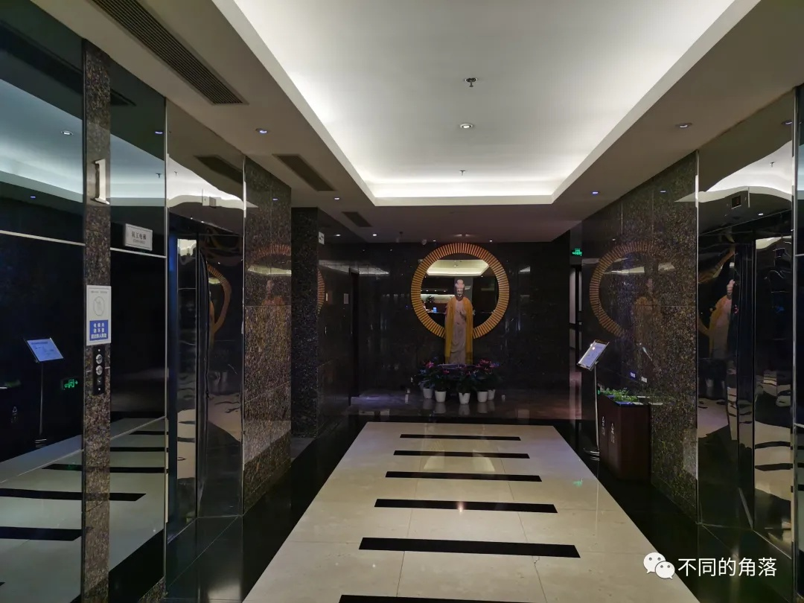</section><p style='font-size: 16px;white-space: normal;outline: 0px;font-family: -apple-system, BlinkMacSystemFont, "Helvetica Neue", "PingFang SC", "Hiragino Sans GB", "Microsoft YaHei UI", "Microsoft YaHei", Arial, sans-serif;letter-spacing: 0.544px;text-indent: 37px;background: rgb(255, 255, 255);'><span style="outline: 0px;font-family: 宋体;"></span>电梯间</p><section style="display: inline-block;">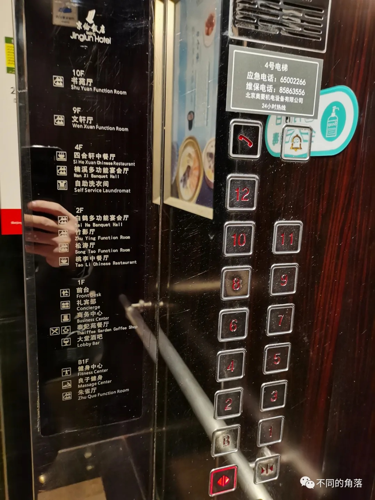</section><section style="text-indent: 2em;">电梯楼层指示牌<br/></section><section style="display: inline-block;">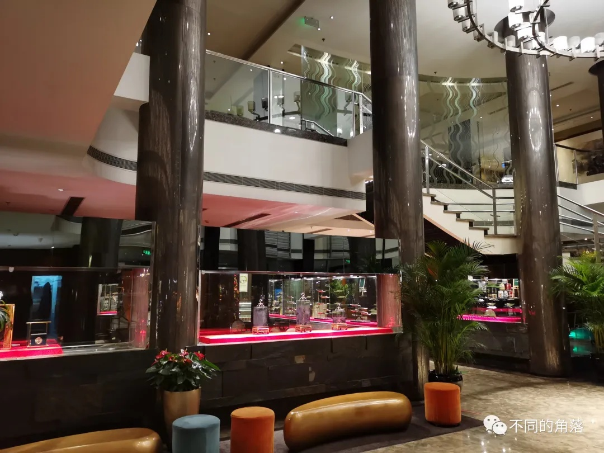</section><p style='font-size: 16px;white-space: normal;outline: 0px;font-family: -apple-system, BlinkMacSystemFont, "Helvetica Neue", "PingFang SC", "Hiragino Sans GB", "Microsoft YaHei UI", "Microsoft YaHei", Arial, sans-serif;letter-spacing: 0.544px;text-indent: 37px;background: rgb(255, 255, 255);'><span style="outline: 0px;font-family: 宋体;">大堂</span><br/></p><section style="display: inline-block;">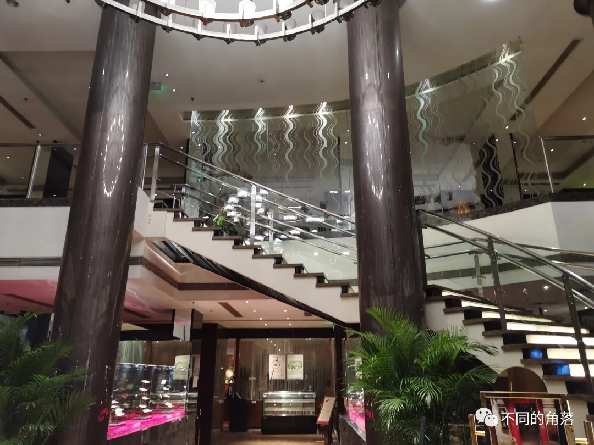</section><p style='font-size: 16px;white-space: normal;outline: 0px;font-family: -apple-system, BlinkMacSystemFont, "Helvetica Neue", "PingFang SC", "Hiragino Sans GB", "Microsoft YaHei UI", "Microsoft YaHei", Arial, sans-serif;letter-spacing: 0.544px;text-indent: 37px;background: rgb(255, 255, 255);'><span style="outline: 0px;font-family: 宋体;">大堂</span></p><section style="display: inline-block;">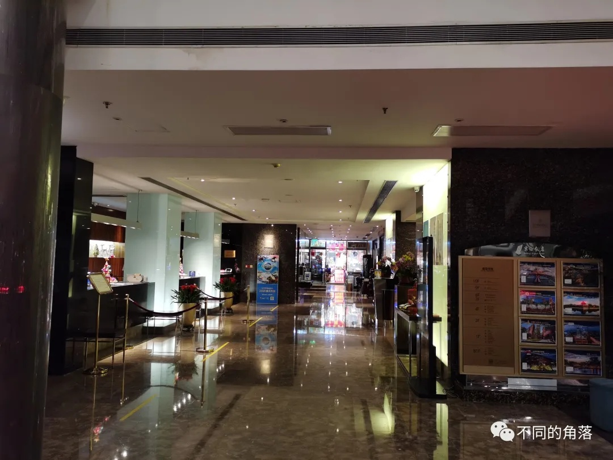</section><p><strong style='font-size: 16px;white-space: normal;outline: 0px;font-family: -apple-system, BlinkMacSystemFont, "Helvetica Neue", "PingFang SC", "Hiragino Sans GB", "Microsoft YaHei UI", "Microsoft YaHei", Arial, sans-serif;letter-spacing: 0.544px;text-indent: 32px;background-color: rgb(255, 255, 255);'><span style="outline: 0px;color: rgb(255, 0, 0);font-family: 宋体;font-size: 18px;"></span></strong><span style="outline: 0px;font-family: 宋体;">    前台</span></p><p><br/></p><p><strong style='font-size: 16px;white-space: normal;outline: 0px;font-family: -apple-system, BlinkMacSystemFont, "Helvetica Neue", "PingFang SC", "Hiragino Sans GB", "Microsoft YaHei UI", "Microsoft YaHei", Arial, sans-serif;letter-spacing: 0.544px;text-indent: 32px;background-color: rgb(255, 255, 255);'><span style="outline: 0px;color: rgb(255, 0, 0);font-family: 宋体;font-size: 18px;">五、客房情况</span></strong></p><p style='font-size: 16px;white-space: normal;outline: 0px;font-family: -apple-system, BlinkMacSystemFont, "Helvetica Neue", "PingFang SC", "Hiragino Sans GB", "Microsoft YaHei UI", "Microsoft YaHei", Arial, sans-serif;letter-spacing: 0.544px;text-indent: 37px;background: rgb(255, 255, 255);'><span style="outline: 0px;font-family: 宋体;">酒店共有601间客房（之前是646间客房），</span><span style="font-family: 宋体;letter-spacing: 0.544px;">房型有高级大</span><span style="font-family: 宋体;letter-spacing: 0.544px;">/</span><span style="font-family: 宋体;letter-spacing: 0.544px;">双床房（30平米）</span><span style="font-family: 宋体;letter-spacing: 0.544px;">、豪华大/</span><span style="font-family: 宋体;letter-spacing: 0.544px;">双床房（30平米）</span><span style="font-family: 宋体;letter-spacing: 0.544px;">、商务<span style="font-size: 16px;letter-spacing: 0.544px;text-indent: 37px;font-family: 宋体;">大床</span><span style="font-size: 16px;letter-spacing: 0.544px;text-indent: 37px;font-family: 宋体;">房（30平米）</span>、行政大床</span><span style="font-family: 宋体;letter-spacing: 0.544px;">房（30平米、12层）</span><span style="font-family: 宋体;letter-spacing: 0.544px;">、商务套房（47平米、60平米）、<span style="font-family: 宋体;font-size: 16px;letter-spacing: 0.544px;text-indent: 37px;background-color: rgb(255, 255, 255);">豪华套房（</span><span style="font-family: 宋体;font-size: 16px;letter-spacing: 0.544px;text-indent: 37px;background-color: rgb(255, 255, 255);">45</span><span style="font-family: 宋体;font-size: 16px;letter-spacing: 0.544px;text-indent: 37px;background-color: rgb(255, 255, 255);">平米</span><span style="font-family: 宋体;font-size: 16px;letter-spacing: 0.544px;text-indent: 37px;background-color: rgb(255, 255, 255);">）、</span>行政套房（47平米），另外还有亲子房、主题房只在OTA上才有。</span></p><p style='font-size: 16px;white-space: normal;outline: 0px;font-family: -apple-system, BlinkMacSystemFont, "Helvetica Neue", "PingFang SC", "Hiragino Sans GB", "Microsoft YaHei UI", "Microsoft YaHei", Arial, sans-serif;letter-spacing: 0.544px;text-indent: 37px;background: rgb(255, 255, 255);'><span style="font-family: 宋体;letter-spacing: 0.544px;caret-color: var(--weui-BRAND);">2021年12月入住的，在首旅如家APP预订的豪华双床房，入住时因为一些问题（可以看八、综合评价），酒店给升级到了行政大床房。</span></p><p style='font-size: 16px;white-space: normal;outline: 0px;font-family: -apple-system, BlinkMacSystemFont, "Helvetica Neue", "PingFang SC", "Hiragino Sans GB", "Microsoft YaHei UI", "Microsoft YaHei", Arial, sans-serif;letter-spacing: 0.544px;text-indent: 37px;background: rgb(255, 255, 255);'><span style="font-family: 宋体;letter-spacing: 0.544px;caret-color: var(--weui-BRAND);">行政大床房都在12层，客房面积标注是30平米，实际感觉不到30平米。房间设施有些陈旧，还不如一些和颐系列品牌酒店。</span></p><section style="display: inline-block;">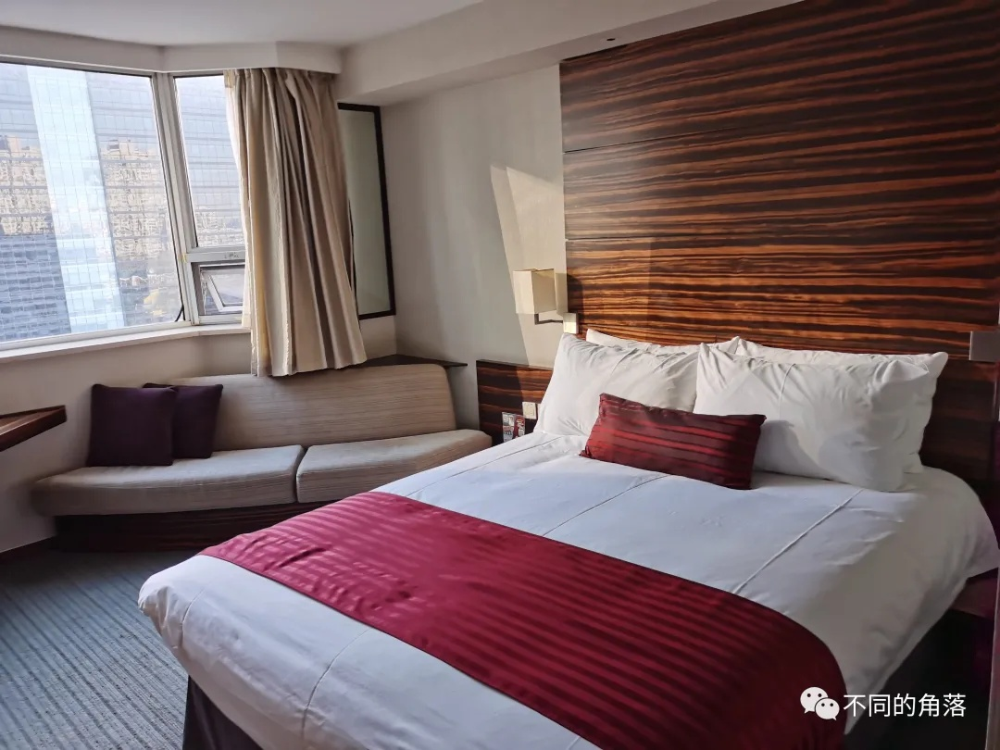</section><p style='font-size: 16px;white-space: normal;outline: 0px;font-family: -apple-system, BlinkMacSystemFont, "Helvetica Neue", "PingFang SC", "Hiragino Sans GB", "Microsoft YaHei UI", "Microsoft YaHei", Arial, sans-serif;letter-spacing: 0.544px;text-indent: 32px;background-color: rgb(255, 255, 255);'><br/></p><section style="display: inline-block;">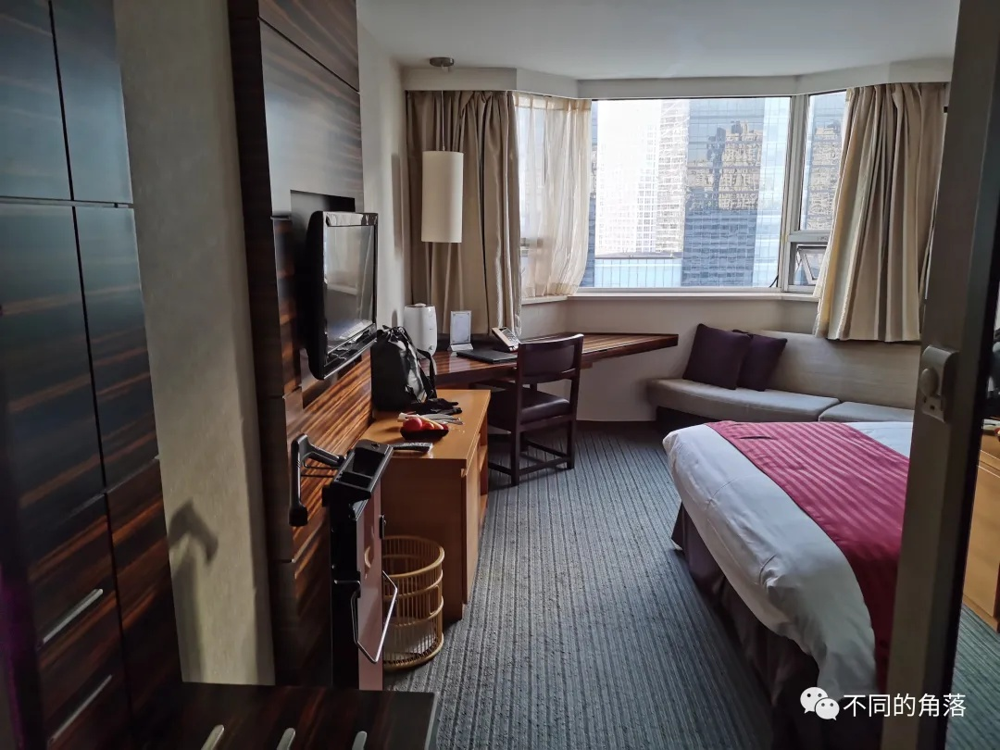</section><p><br/></p><section style="display: inline-block;">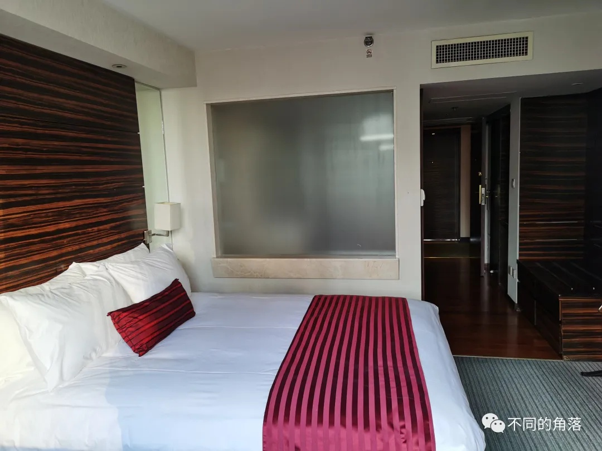</section><p><br/></p><section style="display: inline-block;">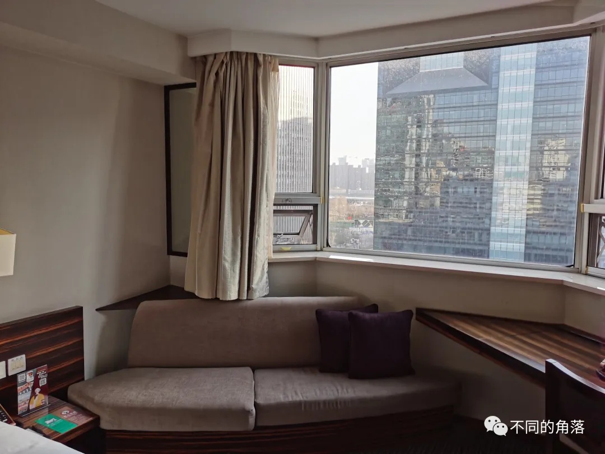</section><p><br/></p><section style="display: inline-block;">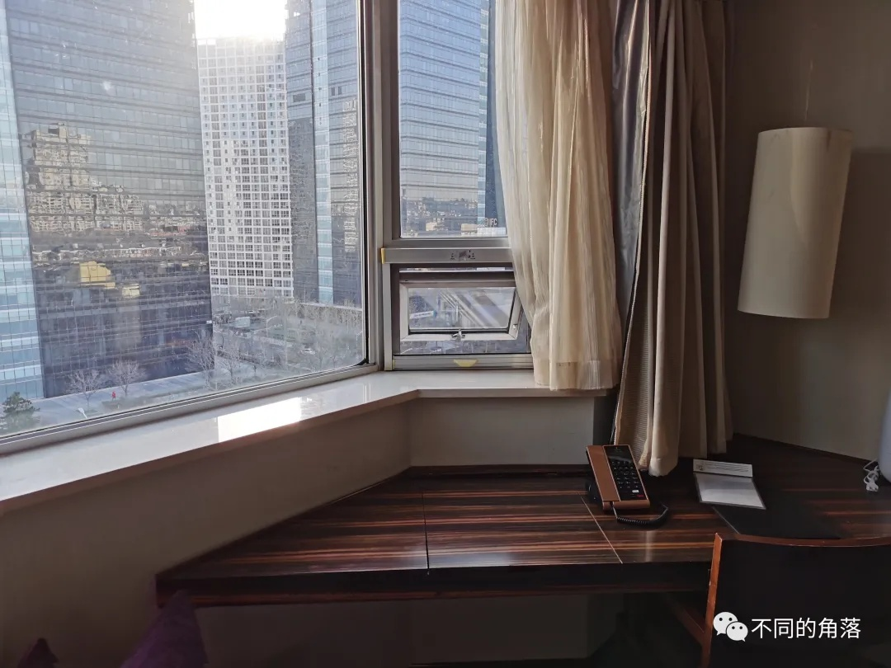</section><p><br/></p><section style="display: inline-block;"><br/></section><section style="display: inline-block;">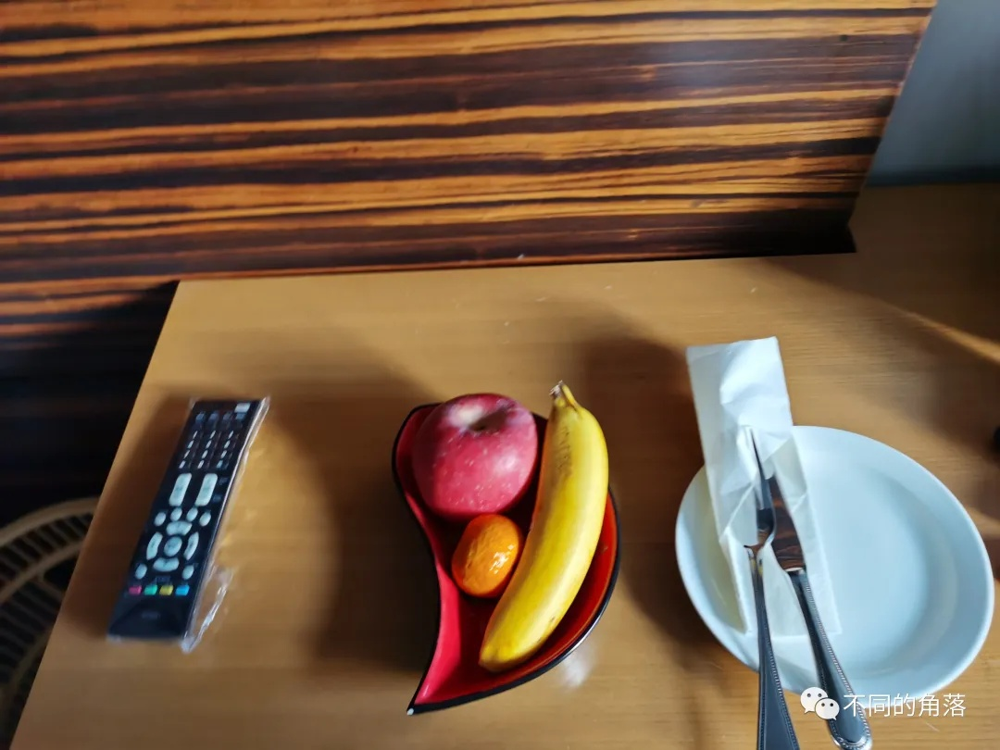</section><p>首旅如家钻石会员的欢迎水果</p><section style="display: inline-block;">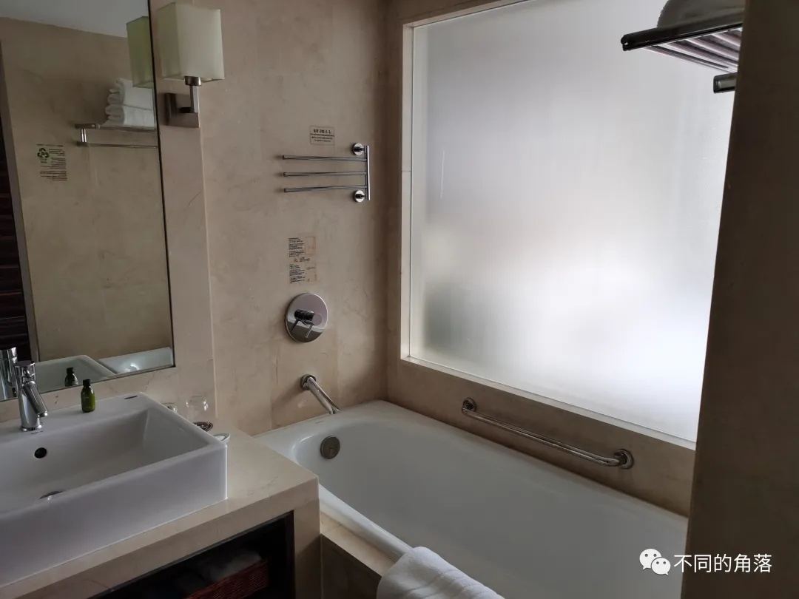</section><p><br/></p><section style="display: inline-block;">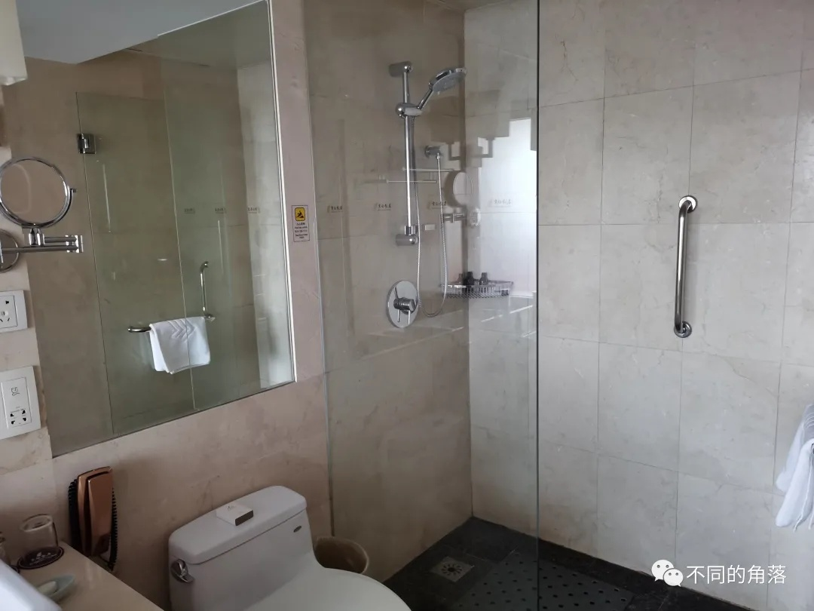</section><p><br/></p><p style='font-size: 16px;white-space: normal;outline: 0px;font-family: -apple-system, BlinkMacSystemFont, "Helvetica Neue", "PingFang SC", "Hiragino Sans GB", "Microsoft YaHei UI", "Microsoft YaHei", Arial, sans-serif;letter-spacing: 0.544px;text-indent: 32px;background-color: rgb(255, 255, 255);'><span style="outline: 0px;color: rgb(255, 0, 0);"><strong style="outline: 0px;"><span style="outline: 0px;font-family: 宋体;font-size: 18px;">六、餐饮情况</span></strong></span><br/></p><p style='font-size: 16px;white-space: normal;outline: 0px;font-family: -apple-system, BlinkMacSystemFont, "Helvetica Neue", "PingFang SC", "Hiragino Sans GB", "Microsoft YaHei UI", "Microsoft YaHei", Arial, sans-serif;letter-spacing: 0.544px;background-color: rgb(255, 255, 255);text-indent: 37px;'><span style="outline: 0px;font-family: 宋体;">首旅如家钻石会员有单早，后期首旅如家白金会员也给单早了，早餐一般，单独购买115元一位不值。</span></p><p style='font-size: 16px;white-space: normal;outline: 0px;font-family: -apple-system, BlinkMacSystemFont, "Helvetica Neue", "PingFang SC", "Hiragino Sans GB", "Microsoft YaHei UI", "Microsoft YaHei", Arial, sans-serif;letter-spacing: 0.544px;background-color: rgb(255, 255, 255);text-indent: 37px;'><span style="outline: 0px;font-family: 宋体;">早餐在一楼的泰妃苑餐厅，有北京特色油饼、豆腐脑，还有兰州拉面。</span></p><section style="display: inline-block;">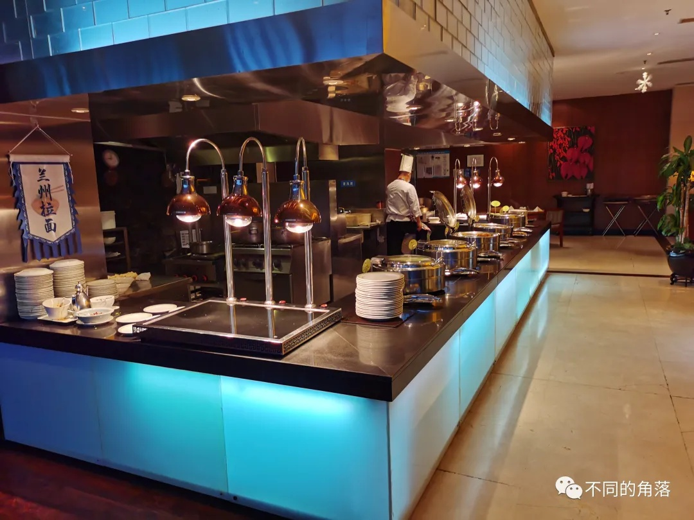</section><p><br/></p><section style="display: inline-block;">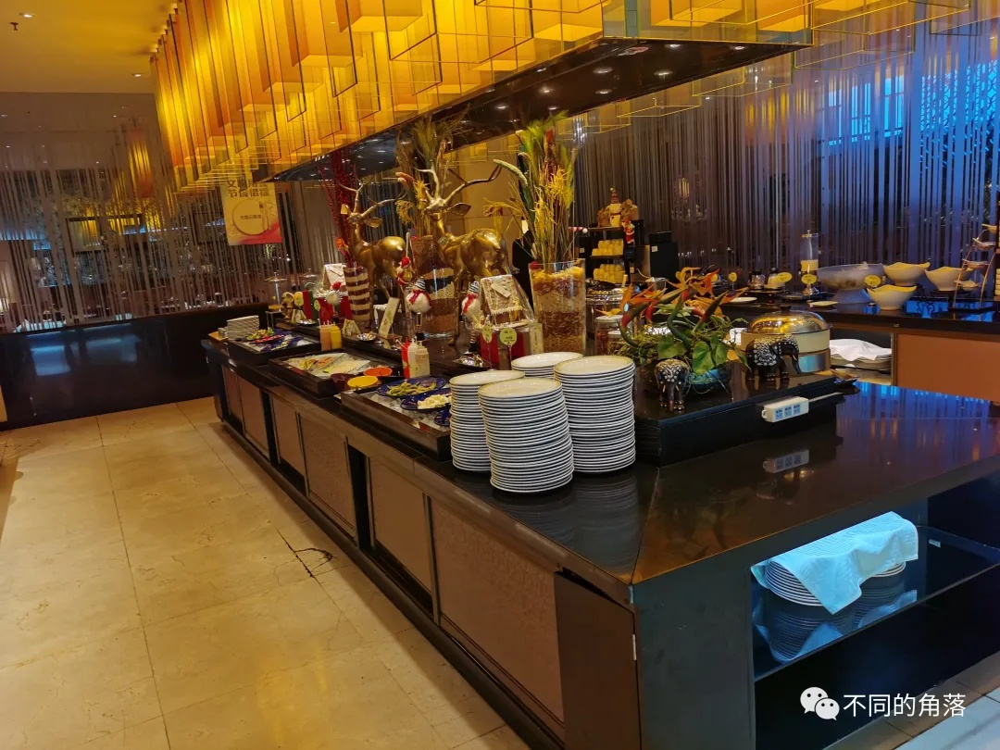</section><p><br/></p><section style="display: inline-block;">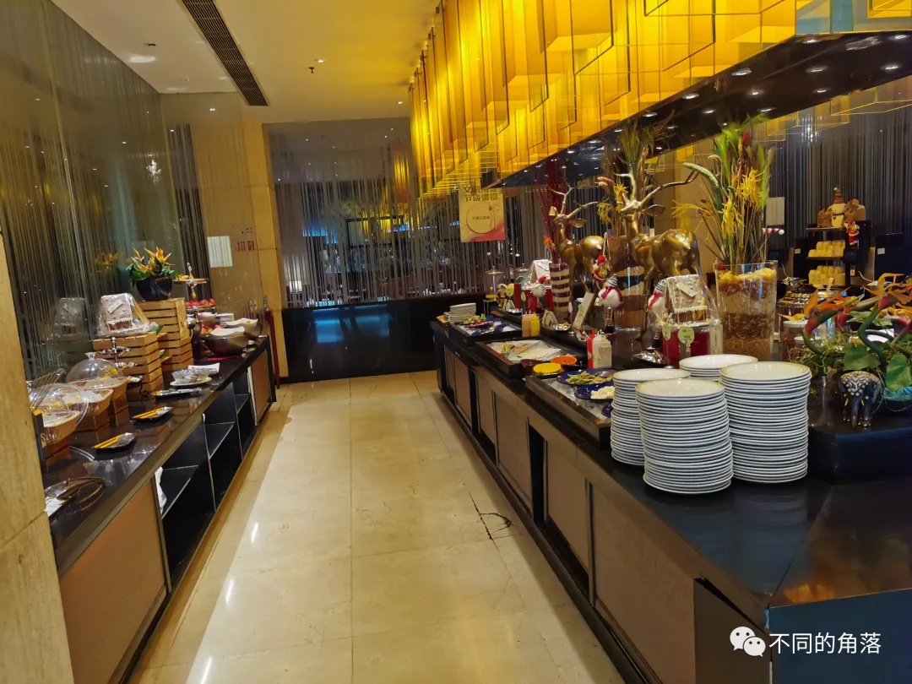</section><p><br/></p><section style="display: inline-block;">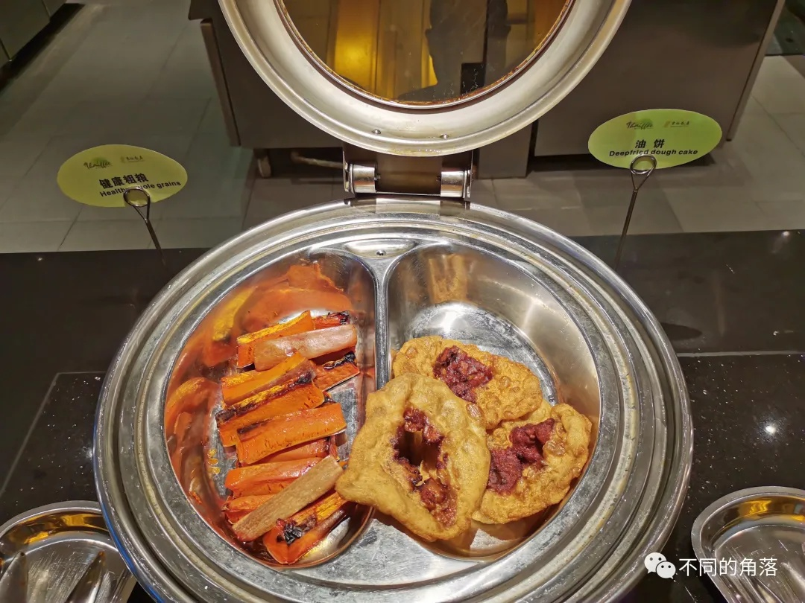</section><p style='font-size: 16px;white-space: normal;outline: 0px;font-family: -apple-system, BlinkMacSystemFont, "Helvetica Neue", "PingFang SC", "Hiragino Sans GB", "Microsoft YaHei UI", "Microsoft YaHei", Arial, sans-serif;letter-spacing: 0.544px;background-color: rgb(255, 255, 255);text-indent: 37px;'><span style="outline: 0px;font-family: 宋体;">北京特色早点油饼</span></p><section style="display: inline-block;">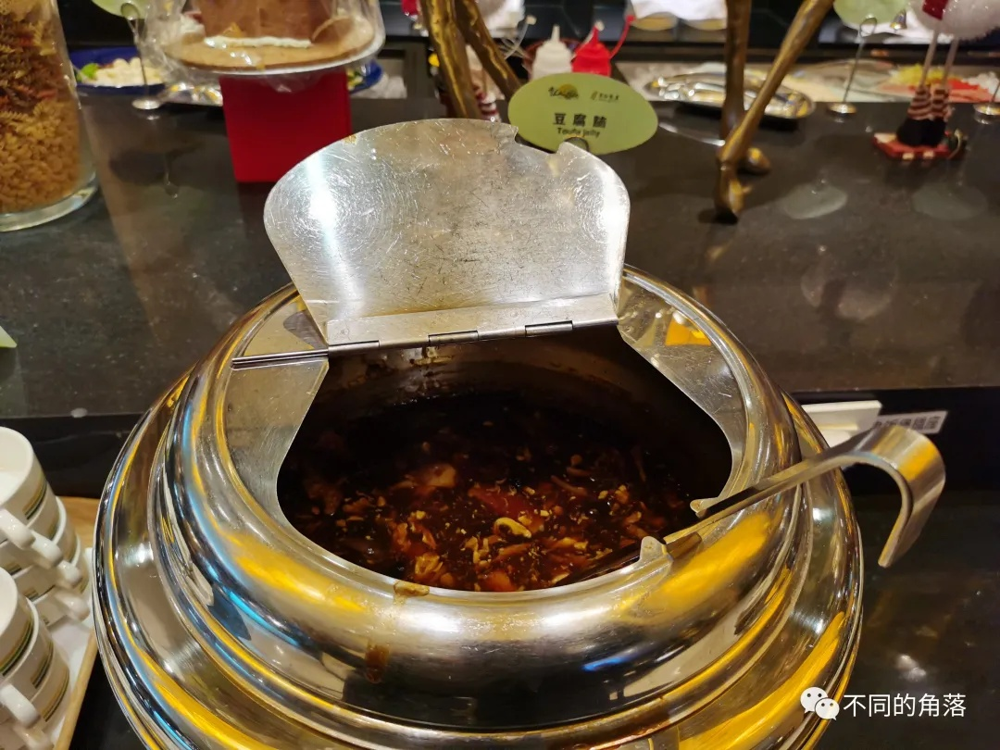</section><p style='font-size: 16px;white-space: normal;outline: 0px;font-family: -apple-system, BlinkMacSystemFont, "Helvetica Neue", "PingFang SC", "Hiragino Sans GB", "Microsoft YaHei UI", "Microsoft YaHei", Arial, sans-serif;letter-spacing: 0.544px;background-color: rgb(255, 255, 255);text-indent: 37px;'><span style="outline: 0px;font-family: 宋体;">豆腐脑卤子</span></p><section style="display: inline-block;">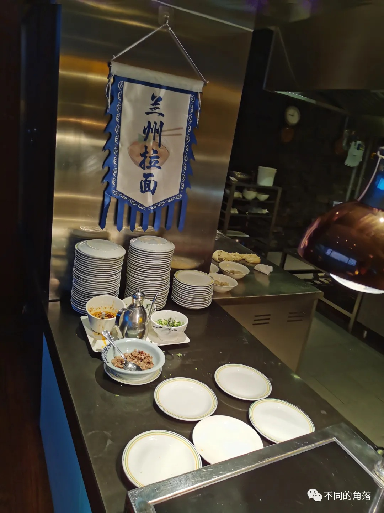</section><p style='font-size: 16px;white-space: normal;outline: 0px;font-family: -apple-system, BlinkMacSystemFont, "Helvetica Neue", "PingFang SC", "Hiragino Sans GB", "Microsoft YaHei UI", "Microsoft YaHei", Arial, sans-serif;letter-spacing: 0.544px;background-color: rgb(255, 255, 255);text-indent: 37px;'><span style="outline: 0px;font-family: 宋体;">兰州拉面</span></p><section style="display: inline-block;">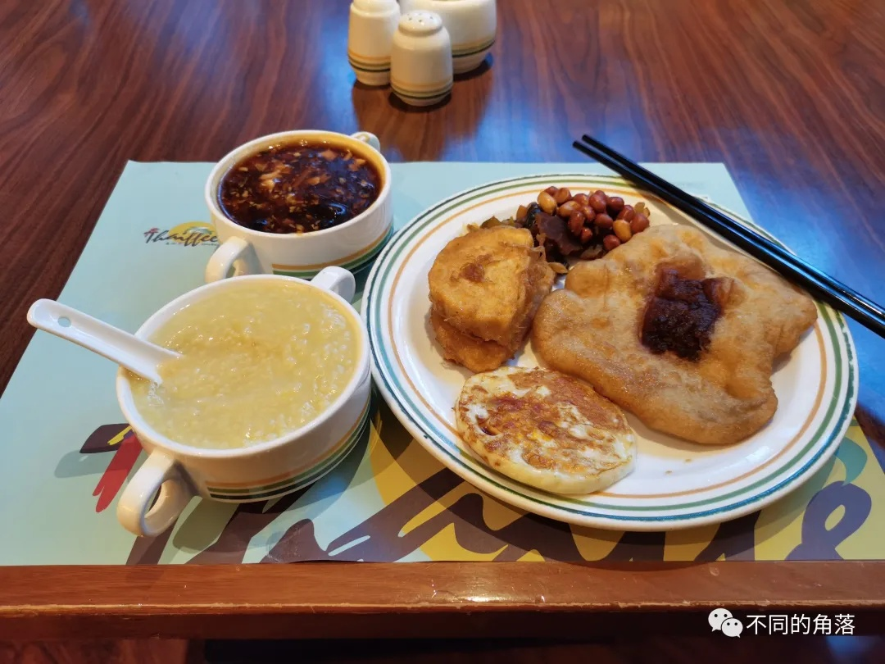</section><p><br/></p><section style="display: inline-block;">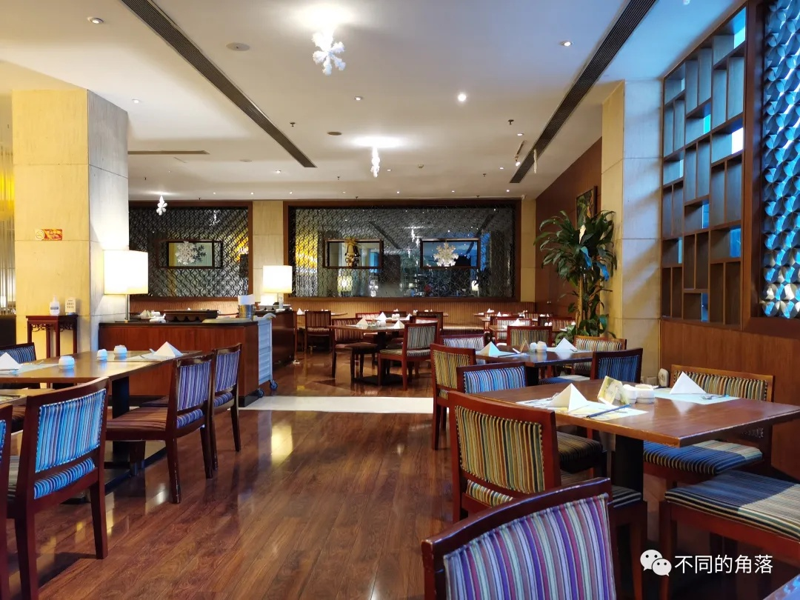</section><p>        <span style="outline: 0px;font-family: 宋体;">餐厅</span><br/></p><section style="display: inline-block;">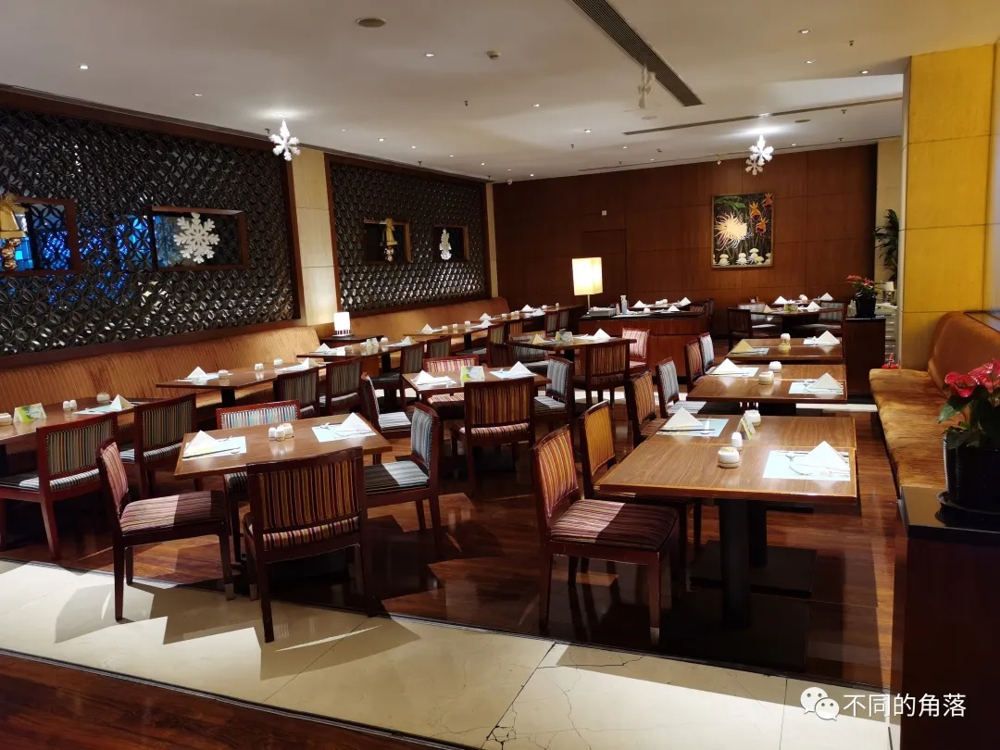</section><p style='font-size: 16px;white-space: normal;outline: 0px;font-family: -apple-system, BlinkMacSystemFont, "Helvetica Neue", "PingFang SC", "Hiragino Sans GB", "Microsoft YaHei UI", "Microsoft YaHei", Arial, sans-serif;letter-spacing: 0.544px;background-color: rgb(255, 255, 255);text-indent: 37px;'><span style="outline: 0px;font-family: 宋体;">酒店没有行政酒廊，钻石会员的行政待遇就是可以延长2小时退房（不能与钻石会员延时退房权益叠加）。</span></p><p style='font-size: 16px;white-space: normal;outline: 0px;font-family: -apple-system, BlinkMacSystemFont, "Helvetica Neue", "PingFang SC", "Hiragino Sans GB", "Microsoft YaHei UI", "Microsoft YaHei", Arial, sans-serif;letter-spacing: 0.544px;background-color: rgb(255, 255, 255);text-indent: 37px;'><br/></p><p style='font-size: 16px;white-space: normal;outline: 0px;font-family: -apple-system, BlinkMacSystemFont, "Helvetica Neue", "PingFang SC", "Hiragino Sans GB", "Microsoft YaHei UI", "Microsoft YaHei", Arial, sans-serif;letter-spacing: 0.544px;text-indent: 32px;background-color: rgb(255, 255, 255);'><span style="outline: 0px;color: rgb(255, 0, 0);"><strong style="outline: 0px;"><span style="outline: 0px;font-family: 宋体;font-size: 18px;">七、员工服务</span></strong></span><br data-filtered="filtered" style="outline: 0px;"/></p><p style='font-size: 16px;white-space: normal;outline: 0px;font-family: -apple-system, BlinkMacSystemFont, "Helvetica Neue", "PingFang SC", "Hiragino Sans GB", "Microsoft YaHei UI", "Microsoft YaHei", Arial, sans-serif;letter-spacing: 0.544px;background-color: rgb(255, 255, 255);text-indent: 37px;'><span style="outline: 0px;font-family: 宋体;">员工服务国企招待所的风格，10分满分可以给7分。</span></p><p style='font-size: 16px;white-space: normal;outline: 0px;font-family: -apple-system, BlinkMacSystemFont, "Helvetica Neue", "PingFang SC", "Hiragino Sans GB", "Microsoft YaHei UI", "Microsoft YaHei", Arial, sans-serif;letter-spacing: 0.544px;background-color: rgb(255, 255, 255);text-indent: 37px;'><br/></p><p style='font-size: 16px;white-space: normal;outline: 0px;font-family: -apple-system, BlinkMacSystemFont, "Helvetica Neue", "PingFang SC", "Hiragino Sans GB", "Microsoft YaHei UI", "Microsoft YaHei", Arial, sans-serif;letter-spacing: 0.544px;text-indent: 32px;background-color: rgb(255, 255, 255);'><span style="outline: 0px;color: rgb(255, 0, 0);"><strong style="outline: 0px;"><span style="outline: 0px;font-family: 宋体;font-size: 18px;">八、综合评价</span></strong></span></p><p style='font-size: 16px;white-space: normal;outline: 0px;font-family: -apple-system, BlinkMacSystemFont, "Helvetica Neue", "PingFang SC", "Hiragino Sans GB", "Microsoft YaHei UI", "Microsoft YaHei", Arial, sans-serif;letter-spacing: 0.544px;background-color: rgb(255, 255, 255);text-indent: 37px;'><span style="outline: 0px;font-family: 宋体;color: rgb(255, 0, 0);">优点</span><span style="outline: 0px;font-family: 宋体;">：</span></p><p style='font-size: 16px;white-space: normal;outline: 0px;font-family: -apple-system, BlinkMacSystemFont, "Helvetica Neue", "PingFang SC", "Hiragino Sans GB", "Microsoft YaHei UI", "Microsoft YaHei", Arial, sans-serif;letter-spacing: 0.544px;background-color: rgb(255, 255, 255);text-indent: 37px;'><span style="outline: 0px;font-family: 宋体;">1、位置很好，北京CBD中心区域，去哪里都方便。</span></p><p style='font-size: 16px;white-space: normal;outline: 0px;font-family: -apple-system, BlinkMacSystemFont, "Helvetica Neue", "PingFang SC", "Hiragino Sans GB", "Microsoft YaHei UI", "Microsoft YaHei", Arial, sans-serif;letter-spacing: 0.544px;background-color: rgb(255, 255, 255);text-indent: 37px;'><span style="outline: 0px;font-family: 宋体;">2、北京的建国、京伦品牌酒店里为数不多的洗浴干湿分离的酒店，终于不用站在浴缸里洗澡了。</span></p><p style='font-size: 16px;white-space: normal;outline: 0px;font-family: -apple-system, BlinkMacSystemFont, "Helvetica Neue", "PingFang SC", "Hiragino Sans GB", "Microsoft YaHei UI", "Microsoft YaHei", Arial, sans-serif;letter-spacing: 0.544px;background-color: rgb(255, 255, 255);text-indent: 37px;'><span style="outline: 0px;font-family: 宋体;">3、客房有可以打开透气的小窗户，房间供暖不错。</span></p><p style='font-size: 16px;white-space: normal;outline: 0px;font-family: -apple-system, BlinkMacSystemFont, "Helvetica Neue", "PingFang SC", "Hiragino Sans GB", "Microsoft YaHei UI", "Microsoft YaHei", Arial, sans-serif;letter-spacing: 0.544px;background-color: rgb(255, 255, 255);text-indent: 37px;'><span style="outline: 0px;font-family: 宋体;color: rgb(255, 0, 0);">不足之处</span><span style="outline: 0px;font-family: 宋体;">：</span></p><p style='font-size: 16px;white-space: normal;outline: 0px;font-family: -apple-system, BlinkMacSystemFont, "Helvetica Neue", "PingFang SC", "Hiragino Sans GB", "Microsoft YaHei UI", "Microsoft YaHei", Arial, sans-serif;letter-spacing: 0.544px;background-color: rgb(255, 255, 255);text-indent: 37px;'><span style="outline: 0px;font-family: 宋体;">1、</span><span style="outline: 0px;font-family: 宋体;color: rgb(255, 0, 0);">首旅如家APP上高级大/双床房每天都是订完状态不可预订，豪华双床房589元，豪华大床房718元</span><span style="outline: 0px;font-family: 宋体;">，打电话给酒店咨询首旅如家钻石会员升房权益，告诉我豪华双床房往上没有双床房型了，</span><span style="outline: 0px;font-family: 宋体;color: rgb(255, 0, 0);">订豪华双床不能升房</span><span style="outline: 0px;font-family: 宋体;">。</span></p><section style="display: inline-block;">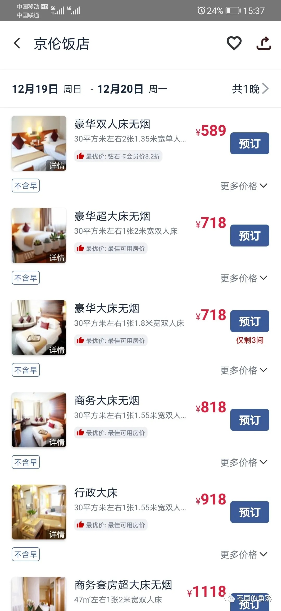</section><p><br/></p><p><br/></p><section style="display: inline-block;">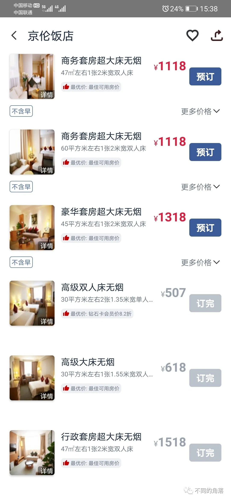</section><p style='font-size: 16px;white-space: normal;outline: 0px;font-family: -apple-system, BlinkMacSystemFont, "Helvetica Neue", "PingFang SC", "Hiragino Sans GB", "Microsoft YaHei UI", "Microsoft YaHei", Arial, sans-serif;letter-spacing: 0.544px;background-color: rgb(255, 255, 255);text-indent: 37px;'><strong><span style="outline: 0px;font-family: 宋体;color: rgb(255, 0, 0);">OTA平台上，高级大/双床房房价503元，豪华大/双床房588元</span></strong><span style="outline: 0px;font-family: 宋体;">，还有其它多种主题房（主题房在首旅如家APP上都没有）。</span><span style="font-family: 宋体;letter-spacing: 0.544px;"></span></p><section style="display: inline-block;">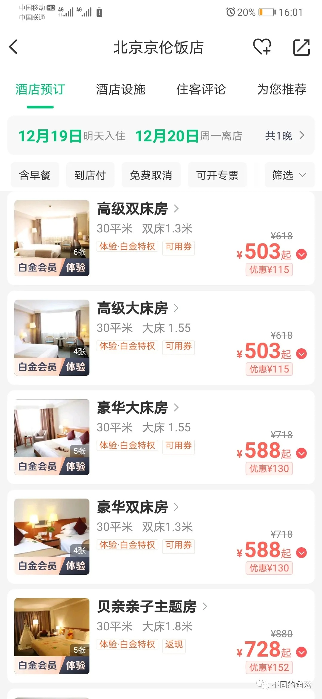</section><p style='font-size: 16px;white-space: normal;outline: 0px;font-family: -apple-system, BlinkMacSystemFont, "Helvetica Neue", "PingFang SC", "Hiragino Sans GB", "Microsoft YaHei UI", "Microsoft YaHei", Arial, sans-serif;letter-spacing: 0.544px;background-color: rgb(255, 255, 255);text-indent: 37px;'><span style="outline: 0px;font-family: 宋体;">咨询酒店，酒店说高级大/双床房目前都在更换家具，不对外开放，只在首旅如家官方预订平台关了房，OTA平台并没有关房，</span><span style="outline: 0px;font-family: 宋体;color: rgb(255, 0, 0);">OTA平台上预订高级大/双床房都是免费给升级到豪华大/双床房</span><span style="outline: 0px;font-family: 宋体;">。</span></p><p style="font-size: 16px;white-space: normal;outline: 0px;letter-spacing: 0.544px;background-color: rgb(255, 255, 255);text-indent: 37px;"><span style="font-family:宋体;">也就是说在</span><span style="color: rgb(255, 0, 0);font-family: 宋体;">首旅如家官方渠道预订大床房最低718元，在OTA平台预订大床房最低503元</span><span style="font-family:宋体;">，果然很首旅。</span></p><p style='font-size: 16px;white-space: normal;outline: 0px;font-family: -apple-system, BlinkMacSystemFont, "Helvetica Neue", "PingFang SC", "Hiragino Sans GB", "Microsoft YaHei UI", "Microsoft YaHei", Arial, sans-serif;letter-spacing: 0.544px;background-color: rgb(255, 255, 255);text-indent: 37px;'><span style="outline: 0px;font-family: 宋体;">2、入住前一天，酒店打电话通知我外地过来需要48小时核酸检测报告，告诉酒店我已经来北京几天时间了，在北京也做过一次核酸检测了，告诉我这样就不用48小时核酸检测报告（2021年12月中旬时北京政策对低风险区过来行程卡不带星旅客要求是进京时需要48小时核酸检测报告）。</span></p><p style='font-size: 16px;white-space: normal;outline: 0px;font-family: -apple-system, BlinkMacSystemFont, "Helvetica Neue", "PingFang SC", "Hiragino Sans GB", "Microsoft YaHei UI", "Microsoft YaHei", Arial, sans-serif;letter-spacing: 0.544px;background-color: rgb(255, 255, 255);text-indent: 37px;'><span style="outline: 0px;font-family: 宋体;">入住当天，前台员工说需要48小时核酸检测报告才可以入住，出示昨天通话记录，让酒店找昨天给我打电话员工，无人给找，找酒店管理层，也无人给找。</span></p><p style='font-size: 16px;white-space: normal;outline: 0px;font-family: -apple-system, BlinkMacSystemFont, "Helvetica Neue", "PingFang SC", "Hiragino Sans GB", "Microsoft YaHei UI", "Microsoft YaHei", Arial, sans-serif;letter-spacing: 0.544px;background-color: rgb(255, 255, 255);text-indent: 37px;'><span style="outline: 0px;font-family: 宋体;">打12345投诉，接电话的</span><strong><span style="outline: 0px;font-family: 宋体;color: rgb(255, 0, 0);">12345男工作人员告诉我酒店都是私人企业，可以自行制定防疫政策要求，他们无权干涉</span></strong><span style="outline: 0px;font-family: 宋体;">（满脑门问号，不知道北京12345从哪里招来如此脑路清奇的大神员工）。</span></p><p style='font-size: 16px;white-space: normal;outline: 0px;font-family: -apple-system, BlinkMacSystemFont, "Helvetica Neue", "PingFang SC", "Hiragino Sans GB", "Microsoft YaHei UI", "Microsoft YaHei", Arial, sans-serif;letter-spacing: 0.544px;background-color: rgb(255, 255, 255);text-indent: 37px;'><span style="outline: 0px;font-family: 宋体;">挂掉重新拨打12345，还好这次接电话的12345工作人员个明白人，北京12345及相关部门真正做事的工作人员业务能力和工作效率比上海12345及相关部门工作人员强了百倍，不一会儿就解决了，酒店告诉我可以正常办理入住。</span><span style="font-family: 宋体;letter-spacing: 0.544px;caret-color: var(--weui-BRAND);">估计酒店觉得理亏，从豪华双床房型给升级到了行政大床房。</span></p><p style='font-size: 16px;white-space: normal;outline: 0px;font-family: -apple-system, BlinkMacSystemFont, "Helvetica Neue", "PingFang SC", "Hiragino Sans GB", "Microsoft YaHei UI", "Microsoft YaHei", Arial, sans-serif;letter-spacing: 0.544px;background-color: rgb(255, 255, 255);text-indent: 37px;'><span style="font-family: 宋体;letter-spacing: 0.544px;caret-color: var(--weui-BRAND);">3、和建国一样的妻离子散早，早餐一般，单独购买115元不值。</span></p><p style='font-size: 16px;white-space: normal;outline: 0px;font-family: -apple-system, BlinkMacSystemFont, "Helvetica Neue", "PingFang SC", "Hiragino Sans GB", "Microsoft YaHei UI", "Microsoft YaHei", Arial, sans-serif;letter-spacing: 0.544px;text-indent: 32px;background-color: rgb(255, 255, 255);'><span style="outline: 0px;font-family: 宋体;color: rgb(255, 0, 0);">整体评价可以给7分，除了位置好些，其它都对不起房价</span><span style="outline: 0px;font-family: 宋体;">。</span></p><p><br/></p><p style='font-size: 16px;white-space: normal;outline: 0px;font-family: -apple-system, BlinkMacSystemFont, "Helvetica Neue", "PingFang SC", "Hiragino Sans GB", "Microsoft YaHei UI", "Microsoft YaHei", Arial, sans-serif;letter-spacing: 0.544px;text-indent: 32px;background-color: rgb(255, 255, 255);'><span style="outline: 0px;color: rgb(255, 0, 0);"><strong style="outline: 0px;"><span style="outline: 0px;font-family: 宋体;font-size: 18px;">九、入住建议</span></strong></span></p><section style='font-size: 16px;white-space: normal;outline: 0px;font-family: -apple-system, BlinkMacSystemFont, "Helvetica Neue", "PingFang SC", "Hiragino Sans GB", "Microsoft YaHei UI", "Microsoft YaHei", Arial, sans-serif;letter-spacing: 0.544px;text-indent: 2em;background-color: rgb(255, 255, 255);'><span style="outline: 0px;font-family: 宋体;">1、首旅如家白金卡/钻石卡官方渠道预订建国、京伦、南苑、南山4个所谓的高端品牌都是只有一份早餐，单独购买早餐115元一份非常不值，钻石会员的行政待遇可以忽略，单人入住还可以。</span></section><section style='font-size: 16px;white-space: normal;outline: 0px;font-family: -apple-system, BlinkMacSystemFont, "Helvetica Neue", "PingFang SC", "Hiragino Sans GB", "Microsoft YaHei UI", "Microsoft YaHei", Arial, sans-serif;letter-spacing: 0.544px;text-indent: 2em;background-color: rgb(255, 255, 255);'><span style="outline: 0px;font-family: 宋体;">2、首旅如家钻石卡/白金卡目前还可以免费匹配，如果没有钻石卡/白金卡建议先免费匹配。</span></section><section style='font-size: 16px;white-space: normal;outline: 0px;font-family: -apple-system, BlinkMacSystemFont, "Helvetica Neue", "PingFang SC", "Hiragino Sans GB", "Microsoft YaHei UI", "Microsoft YaHei", Arial, sans-serif;letter-spacing: 0.544px;text-indent: 2em;background-color: rgb(255, 255, 255);'><span style="outline: 0px;font-family: 宋体;"><br/></span></section><p style='outline: 0px;font-family: -apple-system, BlinkMacSystemFont, "Helvetica Neue", "PingFang SC", "Hiragino Sans GB", "Microsoft YaHei UI", "Microsoft YaHei", Arial, sans-serif;font-size: 16px;letter-spacing: 0.544px;white-space: normal;text-indent: 37px;background: rgb(255, 255, 255);'><span style="outline: 0px;font-family: 宋体;">更多的国内酒店入住体验报告、酒店常识、酒店行业资讯、酒店集团介绍、航空常识、沈阳旅游等相关内容可以到我的微信公众号里查看。</span></p><p style='outline: 0px;font-family: -apple-system, BlinkMacSystemFont, "Helvetica Neue", "PingFang SC", "Hiragino Sans GB", "Microsoft YaHei UI", "Microsoft YaHei", Arial, sans-serif;font-size: 16px;letter-spacing: 0.544px;white-space: normal;text-indent: 37px;background: rgb(255, 255, 255);'><span style="outline: 0px;font-family: 宋体;">也欢迎大家关注我的微信公众号：</span><span style="outline: 0px;font-family: 宋体;color: rgb(255, 0, 0);"><strong style="outline: 0px;">sfk024</strong></span></p><p style='outline: 0px;font-family: -apple-system, BlinkMacSystemFont, "Helvetica Neue", "PingFang SC", "Hiragino Sans GB", "Microsoft YaHei UI", "Microsoft YaHei", Arial, sans-serif;font-size: 16px;letter-spacing: 0.544px;white-space: normal;text-indent: 37px;background: rgb(255, 255, 255);'><span style="outline: 0px;font-family: 宋体;">公众号名称：</span><strong style="outline: 0px;"><span style="outline: 0px;font-family: 宋体;color: rgb(255, 0, 0);">不同的角落</span></strong></p><p style='outline: 0px;font-family: -apple-system, BlinkMacSystemFont, "Helvetica Neue", "PingFang SC", "Hiragino Sans GB", "Microsoft YaHei UI", "Microsoft YaHei", Arial, sans-serif;font-size: 16px;letter-spacing: 0.544px;white-space: normal;text-indent: 37px;background: rgb(255, 255, 255);'><span style="outline: 0px;font-family: 宋体;">在微信公众号搜索sfk024或是不同的角落都可以搜索到，也可以直接扫码或长按识别下方二维码关注。</span></p><p style="text-align: center;"><span style="font-family: 宋体;background-color: rgb(255, 255, 255);letter-spacing: 0.544px;text-indent: 2em;text-align: justify;"></span></p></section></div>